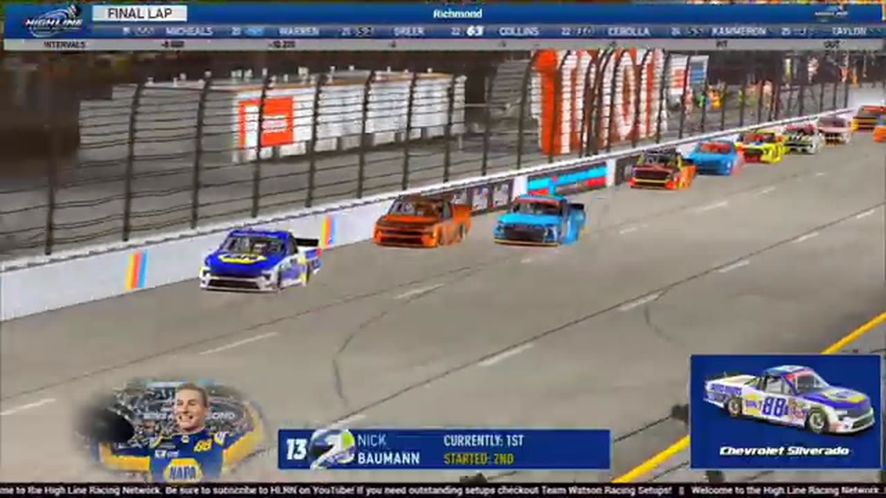

Bryson Myers
Team assignment not stated in the structured owner record.
A PODIUM FILE WITH AN OPEN RESULT HORIZON
- Official files
- 2
- Central editions
- 1
- Exact tape cues
- 9
- Accepted podiums
- 1
Bryson Myers has 1 position-specific top-three receipt: S1 R14 at Richmond (P2). No feature win is currently supported in the accepted result ledger. A consistently stated team affiliation remains open for owner review. The currently indexed source window runs from February 24, 2026 through April 16, 2026.
The official tape index connects the name to 2 race files, 1 Central edition, and 9 primary-broadcast navigation cues. The densest direct-tape categories are postrace (3 cues) and battle (2 cues). Those counts describe where the name is easiest to find; they are not fault, pace, or performance grades. A source-attributed car frame is published with its original video and timestamp. That is the current discovery map for Bryson Myers.
That is enough for a real result dossier without pretending the archive knows every start or finish. Owner classifications can extend the record later through the same stable race IDs. Separately, 3 Highline Live files sit on the bonus shelf and never enter the official season ledger. The displayed name is labeled transcript normalized; that status remains visible so an owner roster can strengthen or correct the identity without rewriting the evidence trail. Those boundaries define Bryson Myers's public HLRN file.
9 featured race-tape cues
These are discovery routes into complete HLRN broadcasts, not performance grades or inferred results.
- S1 / R14 · BATTLE
Fresh tires carry Haley and Bowman into the Richmond fight
Bryson Myers brushes the wall as four-tire runners Trevor Haley and Nick Bowman attack the front. Bowman reaches the inside battle while the booth watches the two-tire gamble begin to fade.
Richmond - S1 / R14 · BATTLE
Bryson Myers and Zach Smith carry the Richmond lead battle
S1 / R14 at 1:19:37: The Richmond pack compresses in a front-pack fight while Bryson Myers, Zach Smith, John Crosby, and Nick Bowman are named on the call. The chapter keeps the live battle intact and makes no finishing-order claim.
Richmond - S1 / R14 · RESTART
The Richmond field takes the opening green
After the grid completes, Bryson Myers and Nick Bowman bring the actual Richmond field live. Myers holds the early lead while Trevor Haley begins attacking from the inside.
Richmond - S1 / R14 · STRATEGY
Bryson Myers chooses two tires against Darkhorse's four
The pit-stop readout shows Bryson Myers taking two tires while Trevor Haley and Nick Bowman choose four. HLRN frames the split as the key Richmond strategy test before the next restart.
Richmond - S1 / R14 · INCIDENT
Mid-race contact interrupts Richmond's two-tire experiment
The booth compares fresh two-tire choices for Bryson Myers and Trevor Haley before a crash signal sends the broadcast to quarter-speed replay. The driver's ASR rendering remains too uncertain to publish as an identity claim.
Richmond - S1 / R14 · QUALIFYING
Richmond's keys put pit discipline ahead of raw speed
Before the grid roll, HLRN emphasizes tire management, track position, limited fuel, and pit-road discipline. The window is a pre-race strategy brief—not an in-race tire-choice sequence.
Richmond - S1 / R14 · POSTRACE
Nick Bowman anchors the Richmond finish replay
S1 / R14 at 1:41:18: The reviewed live-race close has passed before this Richmond finish booth review begins with Nick Bowman, Bryson Myers, and John Crosby named in the discussion. It remains post-race context, not a new incident, stage, strategy call, finish, or result receipt.
Richmond - S1 / R14 · POSTRACE
Nick Bowman and Randy Showers anchor the Richmond post-race result review
S1 / R14 at 1:42:18: The reviewed live-race close has passed before this Richmond result booth review begins with Nick Bowman, Randy Showers, Bryson Myers, and Trevor Haley named in the discussion. It remains post-race context, not a new incident, stage, strategy call, finish, or result receipt.
Richmond - S1 / R14 · POSTRACE
Bryson Myers and Nick Bowman anchor the Richmond post-race result review
S1 / R14 at 1:48:34: The reviewed live-race close has passed before this Richmond result booth review begins with Bryson Myers, Nick Bowman, John Crosby, and Randy Showers named in the discussion. It remains post-race context, not a new incident, stage, strategy call, finish, or result receipt.
Richmond
Recent editions connected to Bryson Myers
Verified team history is not consistently stated. Complete starts, finishes, and points remain open beyond the recovered results. Name normalization remains reviewable against owner records.